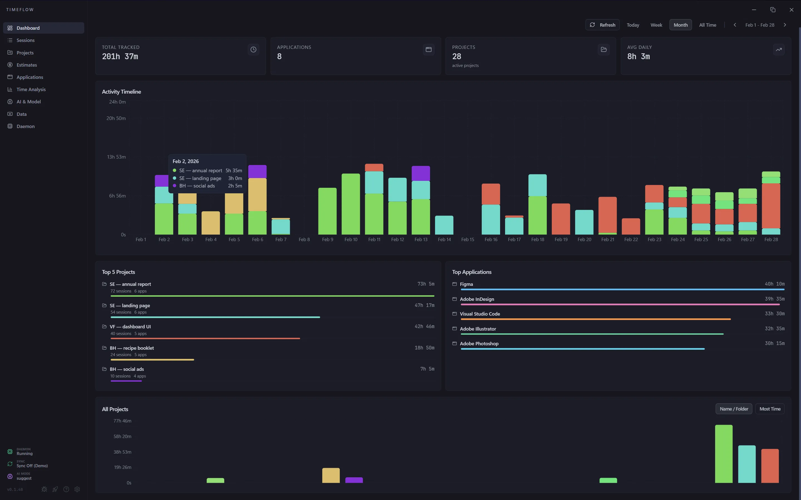
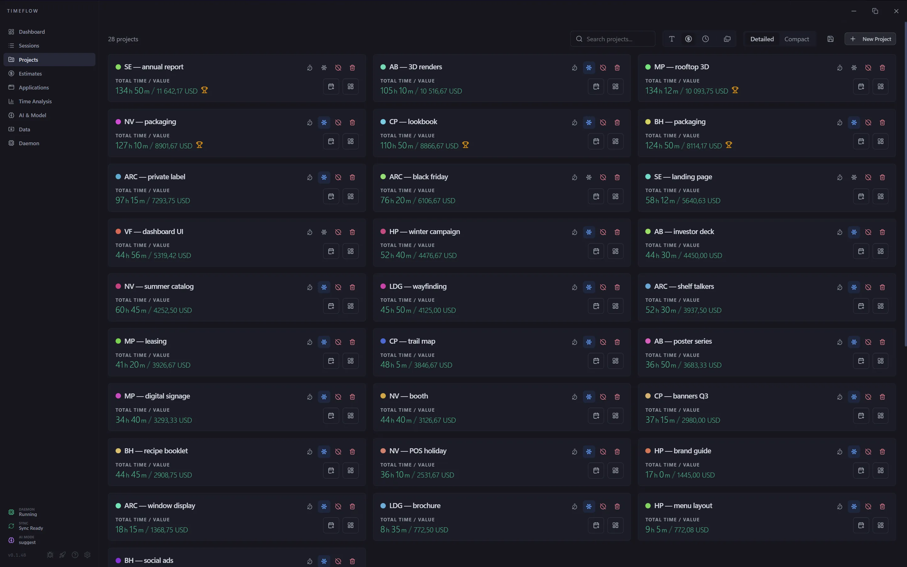
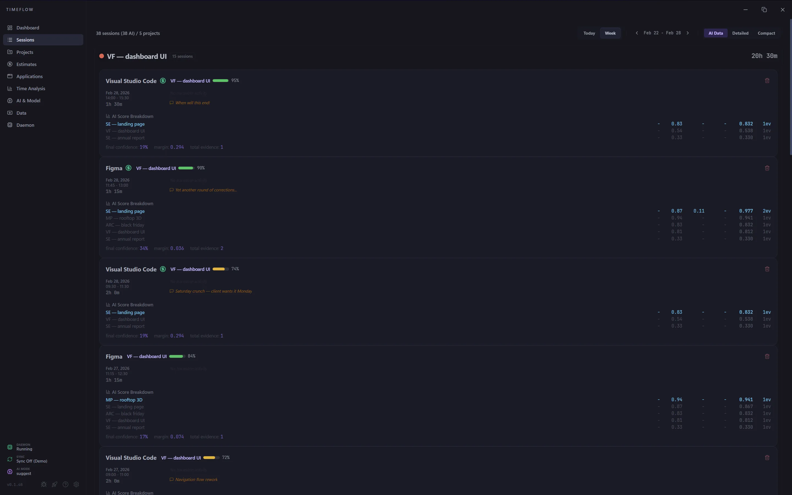
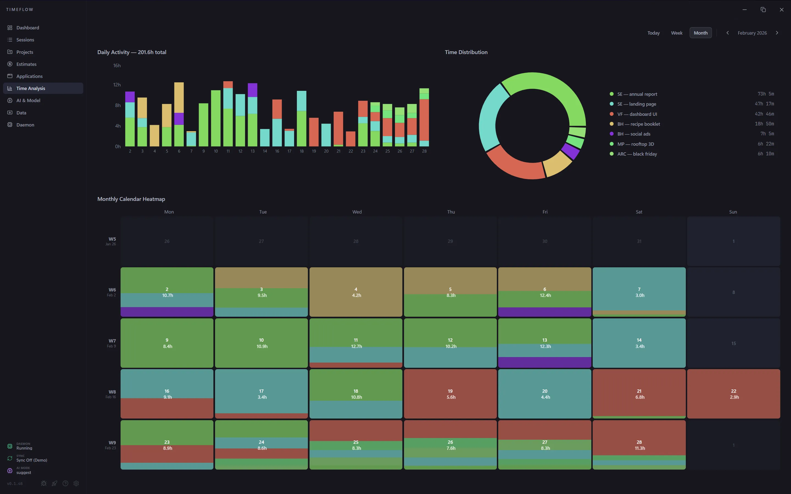
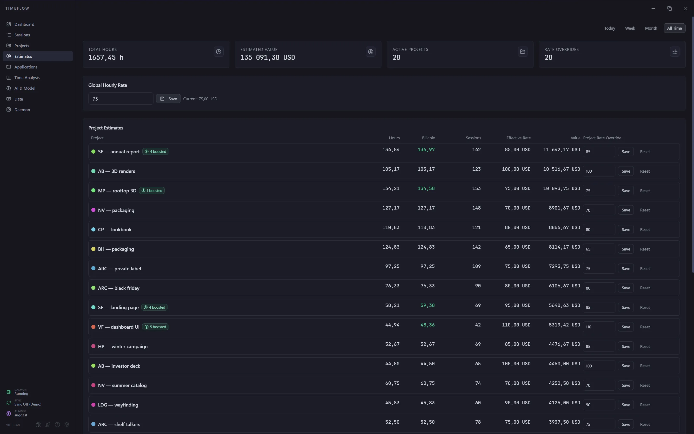
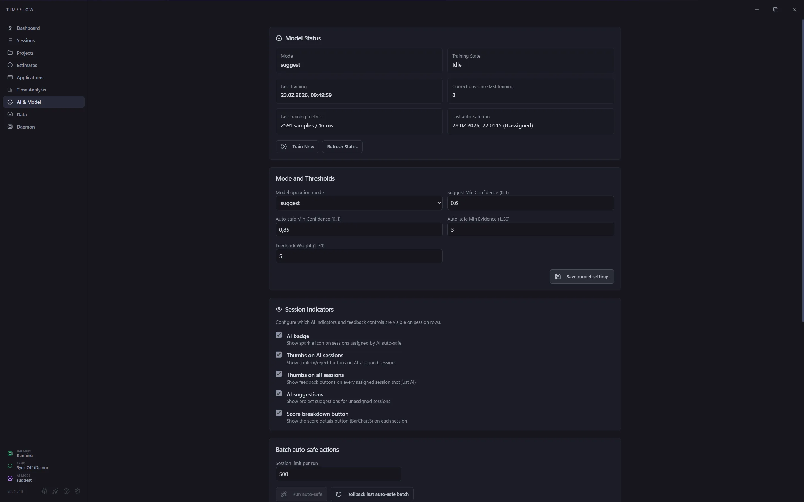

Moduły w aplikacji
10 +
Dashboard, projekty, sesje, AI, analityka, wyceny, proces w tle i więcej
Desktopowy tracker dla freelancerów — zajmij się tworzeniem, my zajmiemy się czasem.
TIMEFLOW rejestruje aktywność w tle i stosuje Algorytm Uczciwego Czasu — deduplikuje multitasking, sprawiedliwie dzieli sekundy między projekty. Offline. Bez subskrypcji.
Interfejs TIMEFLOW
Dashboard, projekty, sesje i analityka w jednym workflow
1 / 6






Moduły w aplikacji
10 +
Dashboard, projekty, sesje, AI, analityka, wyceny, proces w tle i więcej
Platformy desktop (teraz)
1
Windows • macOS, Linux i mobile app planowane
Tryby pracy z AI
3
sam decydujesz jak bardzo AI się angażuje — z cofnięciem zmian w razie wpadki
TIMEFLOW jest w becie. Szukamy freelancerów, którzy chcą kształtować produkt — twój feedback trafia bezpośrednio na roadmapę.
Działa w pełni bez internetu. Dane lokalne, eksport JSON i transfer przez USB — żadnych wymagań co do połączenia.
Kod zostanie udostępniony. W przygotowaniu: menedżer projektów z własnym drzewem folderów i archiwizacją plików.
Dla kogo działa najlepiej
Projektanci skaczą między Figma, Photoshopem, przeglądarką i komunikatorem po kilkadziesiąt razy dziennie. TIMEFLOW porządkuje ten chaos i odzyskuje kontekst, którego sam byś nie odtworzył.
Rozliczasz czas z klientami bez wpisywania czegokolwiek ręcznie — nawet gdy skaczesz między kilkoma apkami i folderami naraz.
Od razu widać, co zjada czas w danym tygodniu — research, makiety, iteracje czy konsultacje — heatmapa i trendy gotowe bez klikania.
TIMEFLOW sprawdzi się wszędzie tam, gdzie rozliczasz czas z klientem — w development, montażu, konsultingu, pisaniu.
Jak to działa
Automatyczny tracking + ręczna kontrola tam, gdzie trzeba. Dokładność bez klikania przez cały dzień.
Daemon zbiera dane w tle, a dashboard ściąga je przy starcie i odświeża sesje z dnia.
Zakładasz projekty, przypisujesz apki, akceptujesz lub odrzucasz sugestie AI — ręcznie poprawiasz tylko to, co musi być poprawione.
Na koniec masz dashboard z metrykami, wycenę godzin i narzędzia do eksportu, importu i synca między maszynami.
Co TIMEFLOW robi już teraz
Wszystko poniżej realnie działa w apce — auto-import, sesje, sugestie AI, sync online i kontrola demona. Nie lista życzeń, a gotowy software.
Tracking Core
Daemon zbiera dane w tle i matematycznie deduplikuje aktywność — multitasking nie pompuje godzin Twojemu klientowi.
Dashboard
Metryki, top projekty, top aplikacje, timeline i ostrzeżenie jeśli coś jest nieprzypisane.
Projects
Projekt = folder. Auto-detekcja kandydatów z aktywności i sync subfolderów — nie musisz nic konfigurować przy nowym zleceniu.
Sessions
Sesje pogrupowane po projektach, zakres dzienny lub tygodniowy — prawym klikiem przypisujesz, odpinasz albo usuwasz wpis bez wychodzenia z widoku.
AI & Model
Lokalny silnik ML w Rust czyta kontekst apki, porę dnia i tokeny z nazw plików i okien (najsilniejszy sygnał). 100% offline — żadnych zewnętrznych API, żadnego ChatGPT.
Analysis
Statystyki to nie tylko liczby — za każdą sekundą stoi konkretna historia plików. Masz dowód pracy, jeśli klient pyta o szczegóły.
Estimates
Globalną stawkę ustawiasz raz, nadpisujesz per projekt albo dodajesz mnożnik do konkretnej sesji — wartość pracy za wybrany zakres widzisz od razu.
Data & Sync
JSON export całości albo wybranego projektu, import z walidacją i podglądem konfliktów, delta sync online albo transfer USB — dane pod Twoją kontrolą.
Daemon & Ops
Start, stop i restart demona prosto z apki, logi na żywo i status zbierania danych. Minimalny ślad systemowy — nie spowalnia sprzętu w codziennej pracy.
Algorytm Uczciwego Czasu (Unique Project Time)
Większość trackerów robi ten sam błąd — sumuje czas każdej otwartej apki osobno, sztucznie pompując statystyki. TIMEFLOW deduplikuje aktywność i dzieli sekundy uczciwie między projekty. Klient dostaje realne liczby, a Ty czyste sumienie przy fakturze.
Ochrona przed zawyżaniem
Inne trackery liczą multitasking osobno (3h pracy w 1h zegarowej). TIMEFLOW deduplikuje.
Sprawiedliwy podział
Backend w Rust dzieli sekundy uczciwie między projekty, kiedy używasz wielu narzędzi naraz.
Dowód pracy
Za każdą sekundą stoi historia plików — jeśli klient pyta o szczegóły, masz dowód.
Lokalna wiarygodność
Dane przetwarzane lokalnie w SQLite — nikt nie manipuluje statystykami "w chmurze".
Wartość dla klienta
Czas unikalny, a nie czas "procesorowy" aplikacji.
Transparentność
Koniec dyskusji o stawkach — masz twarde dane, które mówią same za siebie.
Platformy i status
Obecna wersja to stabilny desktop workflow i testy beta z realnymi użytkownikami. Nowe platformy wchodzą dopiero, gdy są zrobione porządnie.
Desktop app + proces w tle + dashboard + zarządzanie importem i logami.
Pełne wsparcie desktopowe dla użytkowników Apple — z demonem i dashboardem.
Desktop tracking dla użytkowników własnych środowisk — bez kompromisów.
Dostęp do danych i sesji z telefonu — TIMEFLOW zawsze pod ręką.
Stack technologiczny
Lekki ślad i minimalne wymagania to projekt, nie przypadek. Rust na backendzie, oddzielny daemon i lokalna SQLite — szybki start i pełna kontrola nad plikami, bez ciężkiego runtima w tle.
Core Desktop
Lekki runtime desktopowy, szybki start i natywna kontrola nad plikami i procesami — bez ciężkiego narzutu, jaki znasz z Electrona.
Data Layer
Lokalna baza SQLite działa od razu po instalacji (bundled)
— zero dodatkowego setupu, od pierwszego uruchomienia masz gotowy workflow.
UI Dashboard
Dashboard rozwijany niezależnie od backendu — nowe widoki, analityka i panele iterowane szybko.
Daemon
Daemon w Rust ciągnie pipeline danych niezależnie od UI — dashboard to interfejs do pracy, a zbieranie aktywności chodzi sobie w tle.
Stability Engine
Trzy biblioteki pilnują, żeby dane się zgadzały — poprawne czasy, stabilny import/export i przewidywalne zadania w tle.
Sync / Web
Serwer na Next.js koordynuje sync między urządzeniami — local-first pozostaje podstawą.
Roadmapa kolejnej wersji
Fundament jest — projekty, foldery, kandydaci, sync i monitoring czasu. Następna wersja rozbudowuje to w pełne narzędzie do zarządzania projektami, od struktury po archiwizację.
TIMEFLOW już obsługuje monitoring czasu, projekty oparte o foldery, manualne sesje, estymacje, AI sugestie, import/export i sync online.
Dedykowane foldery projektowe i spójne drzewo katalogów dopasowane do typu projektu, klienta albo pipeline'u.
Archiwizacja plików projektowych, udostępnianie i ściślejsze połączenie struktury projektu z danymi o czasie pracy.
Zaufanie i kontakt
Wczesna wersja produktu od CONCEPTFAB. Beta jest po to, żeby iterować na realnych workflowach freelancerów i małych studiów — nie po to, żeby zbierać maile i nigdy się nie odezwać.
TIMEFLOW to desktop-first time tracker do pracy rozliczanej z klientami. Priorytet: lekkość, lokalne dane i szybki workflow bez ręcznego wpisywania godzin.
Po zgłoszeniu pytamy o kontekst pracy (branża, potrzeby), a potem wracamy z info o buildzie i kolejnych krokach. Priorytetyzujemy ludzi, którzy realnie rozliczają czas z klientami.
FAQ
Krótkie odpowiedzi na najważniejsze kwestie: platformy, dane, koszt i przebieg testów.
Inne programy często sumują czas każdej otwartej aplikacji (np. 3h pracy w ciągu 1h zegarowej). TIMEFLOW deduplikuje multitasking i sprawiedliwie dzieli sekundy między projekty (Fair Share). Dzięki temu statystyki są w 100% uczciwe zarówno dla Ciebie, jak i Twojego klienta.
Tak. Dane są przechowywane lokalnie na urządzeniu, a synchronizacja online jest opcjonalna.
Głównie freelancerzy i małe studia rozliczające czas z klientami, ale formularz jest otwarty także dla innych branż.
Aktualnie priorytetem jest Windows. W roadmapie są macOS, Linux i aplikacja mobilna.
Nie. Obecne testy beta są bezpłatne i służą zbieraniu feedbacku do kolejnych iteracji.
Zgłoś się do testów beta
Szukamy głównie grafików — ale drzwi są otwarte dla każdego, kto rozlicza czas z klientami. Twój feedback kształtuje roadmapę: co przeszkadza, co przyspiesza, czego brakuje.
“W końcu wiem ile realnie zarabiam na projekcie. Przestałam zgadywać.”
— Marta, freelance UI designer
Aktualizacje produktu
Sporo zmian w Sessions, AI, Daemon i Settings. Pełna historia zmian (z 0.1.5 włącznie) jest na osobnej podstronie.
Kompletna lista zmian pogrupowana po modułach, z ikonami i w układzie Help/Pomoc.
Zobacz pełny changelog 0.1.6